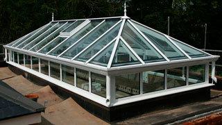

архитектурные решения
для загородной жизни
Все больше любителей великолепия рядом. Творцы подразделения Prestigefacade - Country Living создают неповторимые по своей красоте и удобные по своему функционалу зимние сады, беседки, пристройки к вашему загородному дому.
Разнообразие профильных систем (каркасов) и новые технологии
Разнообразие профильных систем (каркасов) и новые технологии в производстве стекла позволяют современным зимним садам быть многофункциональными и совмещать в себе зону для отдыха, не влияя на микроклимат в зоне растений. Стеклоалюминиевые конструкции долговечны, прочны, не подвержены коррозии и гниению. На них никак не сказывается сырость. Главное - они просты в постройке и обслуживании.Для того, чтобы воплотить идею зимнего сада в реальность, необходимо прежде всего определиться с местом его возведения, будь то это кровля многоэтажного современного жилого комплекса, терраса или часть территории загородного дома.
Следующим этапом необходимо произвести геодезическую съемку, либо сделать необходимые замеры лазерным дальномером с высокой точностью на участке, местности,строении в пределах которого будет вписан зимний сад.
Зимний сад, как стекло-алюминиевая конструкция
- безусловно важный и неотъемлемый кусочек пространства для каждого, кто живет сегодняшнюю жизнь на более глубоком и высоком уровне ценностей. Благодаря сегодняшним материалам и технологиям зимний сад можно спроектировать абсолютно любой формы, не привязывая себя к шаблонным вариантам, ведь такая конструкция должна создаваться однозначно по индивидуальному проекту.
Конструкторский отдел, проектируя, подбирает цвета и материалы с учетом пожеланий заказчика, соблюдая все необходимые нормы и требования к безопасности конструкции. Производственный отдел осуществляет заказ и доставку алюминиевого профиля и комплектующих в цех по сборке конструкции, где происходит напил и покраска в любой цвет палитры каталога RAL.
Далее будущий зимний сад отправляется на объект, где монтажные бригады производят непосредственную сборку в присутствии технического и авторского надзора.
Срок реализации подобных проектов может достигать от двух до шести недель. В зависимости от конструктивных особенностей и личных пожеланий заказчика.
команда подразделения
PrestigeFacade - country living
успешно реализует поставленные перед собой проекты в Санкт-Петербурге и Ленинградской области. Всегда рады новым амбициозным заказчикам с индивидуальными идеями. На всех этапах производства работ наши специалисты проводят регулярные проверки, на объектах постоянно присутствуют ответственные лица и соблюдается техника безопасности.